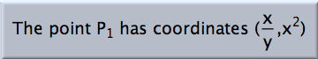

Text

- Add plain text: Click at some position in a view. Then an input dialog pops up asking you to input the desired text. When you exit the window, the text is displayed at the position where you clicked.
- Edit text: When you click on an existing text you will get an editing window that shows the old text. This text can now be changed. After the input window is exited, the old text is replaced by the new text.
- Changing a label: When you click on a geometric element you will also get an editing window, now showing the label of that element. You can now input a new label for the element. However, there is a restriction: The label of an element must be unique in the construction. If you try to input an existing label, a warning message is shown and the label remains unchanged.
Docking and Referencing
Texts are more flexible objects than you might at first think. This comes from two important features: docking and referencing.
- Docking: Usually, a text is located at a certain position relative to the coordinate system of the drawing. When you zoom or translate the view, the text will follow the zooming. This is sometimes desired, but sometimes you might want a different effect. Imagine that you have a descriptive text that should always be shown in the upper left corner of the view. Then you should use "docking." In move mode you select a text and move it around by dragging the mouse. If you come to a position close to the boundaries of the window, you recognize that the text snaps to predefined docking positions. When the text is docked, it stays in its position relative to the window.
It is also possible to dock a text to a point. Drag the text close to the point until the point is highlighted. The text will then consistently stick to the point.
- Referencing: Often it is necessary to have variable parameters inside a text. Imagine a text that reads, "The distance between A and B is 25 cm." In such a text you usually want to refer to the actual distance between "A" and "B" and not to a fixed string "25". You can do this by referencing the value of a geometric element. If "A" is the geometric element, then
@#Areferences its value. Moreover, you usually want to mark the fact that the "A" and the "B" in your text are labels. This forces further changes of element names to be reported to the text object and that the displayed text be changed accordingly. You can use@$Ato refer to a label. Ifdistis the label of the distance object, then the above effect would be generated by the following input string:
The distance between @$A and @$B is @#dist cm.
In the case of points, lines, and conics, the "
@#" operator refers to the coordinates. So, you can writeThe coordinates of @$A are @#A.
Altogether you have three possibilities for referring to the data of a geometric element. If
A is the label of the element, then you access- the label of the element by
@$A, - the defining algorithm of the element by
@@A, and - the value or position of the element by
@#A.
The texts that are then generated are precisely the ones you can see as well in construction text view. The exact representation of the element's value or position can be influenced by the relevant settings in the "Format" menu.
If you want to include Greek characters, you can do so by using
@ and the name of the character, for example, @alpha or @Omega.Furthermore, you have the ability to evaluate CindyScript code within a text and display the result. The syntax for this is
@{…}, where … refers to an arbitrary piece of CindyScript code. For instance, @{sin(A.x)} produces the sine of the 'x'-coordinate of A.Furthermore it is possible to produce formula type setting by inserting TeX code in a text object. For instance it is possible to use Text like
The point $P_1$ has coordinates $({x \over y},x^2)$ to create the text |
| Formula typesetting in texts |
For details on formula typesetting please refer to TeX Rendering.
Click Referencing
As in function mode it is possible to obtain the reference of a geometric element by simply clicking on it in an arbitrary view. This simplifies the process of entering a text line in the dialog box. Clicking on another text produces a copy of this text.
Attaching CindyScript
You can transform a text into a clickable button using the info block in the Inspector. A button can be a push button or a toggle button. A toggle button has a state that can be read using a property. You can attach CindyScript code to both types of buttons, as described in the corresponding section of this manual.
Synopsis
Texts can be added and edited.
Page last modified on Friday 11 of November, 2011 [15:21:41 UTC].
The original document is available at
http://doc.cinderella.de/tiki-index.php?page=Text